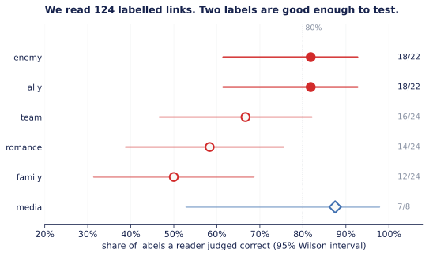
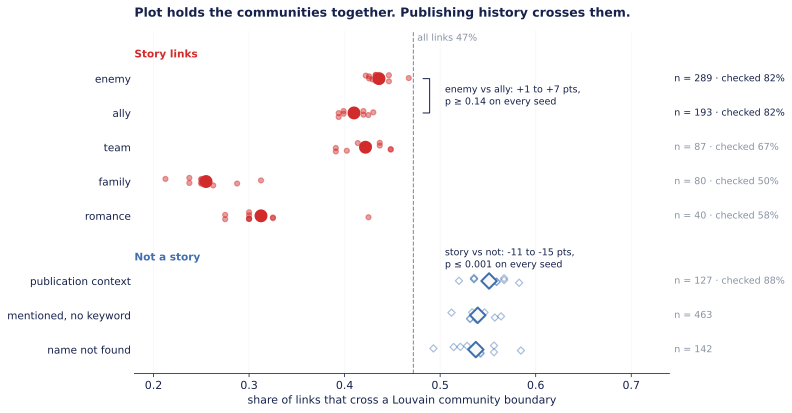

We gave every link in the Marvel network a type — enemy, ally, family, team — from the sentence behind it, and asked whether enemies sit in different communities from allies. They don't. What separates communities isn't who fights whom. It's whether the link is a story at all.
What we asked
Since week 1 an edge from A to B has meant exactly one thing: A's Wikipedia article links to B's. Spider-Man's 106 incoming links, Rockman's two, the clustering surplus we chased through week 2 — all of it treated a link to an archenemy and a link to a wife as the same object.
This week the network gets its text: the full article behind each of the 303 characters. So for every link A → B we can go and find the sentence on A's page where B is mentioned, and read off what kind of relationship it is. That turns 1,784 anonymous arrows into a typed network — friends, foes, family, teammates.
And a typed network lets us ask a question we couldn't before. Louvain splits the Marvel network into seven to nine communities. If those communities are factions — heroes in one, villains in another — then enemy links should be the ones crossing between them, and ally links should stay inside. So:
Do enemy links cross community boundaries more often than ally links?
What we did
The 303 articles come to 4.4 million characters. We split them into 38,108 sentences with a deliberately simple rule-based splitter: break after a full stop, question mark or exclamation mark when a new sentence starts, but protect abbreviations like No. 1 and initials like U.S.A. first. A trained model would split slightly better. This one runs identically on every machine, and when it's wrong you can see why in ten lines of code.
Plain text has lost the link markup, so a link can only be found by name. Each character gets a few aliases: the title without its disambiguator (Hercules (Marvel Comics) → Hercules), an alter ego from the description (Emil Blonsky for the Abomination), a nickname (Johnny Storm for the Human Torch). Matching is whole-word and case-sensitive, so Hulk doesn't fire inside She-Hulk.
One rule mattered more than the rest. She-Hulk's page says She-Hulk 276 times, and one of her links goes to She-Hulk (Lyra), whose alias is also She-Hulk. Without a fix, every sentence about Jennifer Walters counts as a sentence about Lyra. So any alias the target shares with the source page's own subject is dropped for that link.
With that, 1,569 of 1,784 links (88%) resolve to at least one sentence. The other 215 are name variants we don't catch — Rom for Rom the Space Knight, Brother Voodoo for Jericho Drumm.
Six word lists: enemy (fought, defeated, nemesis…), ally (alongside, helped, rescued, teamed up…), team (member, joined, recruited…), family, romance, and a sixth for publication context (appears in, debuted, voiced by, issue…), because plenty of links are nothing but “Star-Lord appears in Ultimate Spider-Man”. A keyword only counts within ten words of the name, and two rules decide whose keyword it is:
"... fought alongside Wolverine" nearest keyword wins → ally
"... her former husband Black Panther, keyword belongs to the
Luke Cage and Misty Knight" nearest character → Black Panther, not Misty
Both rules exist because the first version got those exact sentences wrong. More on that below.
Louvain on the 277-character giant component, one label per pair of characters (both directions pooled, so a mutual link isn't counted twice), and for each label the share of links that cross a community boundary. Then a permutation test: shuffle the enemy and ally labels between those links and see how often chance produces a gap as big as the real one. We shuffle only within bands of hub size, so a difference can't come from enemies simply being attached to bigger hubs.
Week 4 taught us that one Louvain run is one sample — two runs here agree at an NMI of 0.53 to 0.89 — so everything is repeated over ten seeds.
What we checked in the text
A keyword labeller never says “I don't know”. It will label every sentence you hand it, and the labels will look plausible in a table. The only way to find out whether they're right is to read them. So we drew a random sample of labelled links and graded each against one written rule: a label is correct only if the sentence puts the target in that relationship with the page's own subject.

We did it in two rounds. The first 68 links exposed three bugs, and every one was invisible in the output:
Then we graded 56 fresh links under the fixed version, since re-grading the ones we'd just fixed would flatter the fix. Enemy and ally pool at 18 of 22 each. Family didn't move: 6 of 12 in both rounds. Its errors are structural — Sal's son, Bill's nephew, the son of Doctor Doom, and once the publishing imprint Midnight Sons. A keyword window can't tell whose son it is.
That decided the design: the test uses only enemy and ally. The other labels are reported below with a flag on them.
The answer

Enemy links cross community lines 44% of the time, ally links 41%. Across the ten seeds the gap runs from 1 to 7 points and is never significant (p ≥ 0.14 on every seed, hub-stratified). The communities aren't factions.
And this is a real no, not a shrug. In the shuffled networks, 95% of gaps stay within 9 points, so a genuine difference of that size would have shown up. Label noise pulls any real gap toward zero — with one label in five wrong, roughly by a fifth — so what we can honestly say is that any difference between enemies and allies is small. We can't say there is none.
It makes sense once you look at who's in the communities. The largest one is Spider-Man's, and its next three members by degree are Venom, Black Cat and Black Widow: a nemesis, an ex and a sometime partner. A Louvain community in this network is a cast, and a cast includes its villains. Venom's article mentions Spider-Man in 156 separate sentences, because the two are the same story.
What surprised us
The figure has a second pattern we didn't go looking for. Every story label crosses less than the average link. The links that don't describe a story — “appears in”, “debuted in the same comic”, a name with no relationship word near it, a link we couldn't find in the text at all — cross more.
Pooled, story links cross community boundaries 40% of the time and everything else 54%. The gap is 11 to 15 points depending on the seed, and p ≤ 0.001 on every one of the ten, under the same hub-stratified shuffle. Against the publication-context label alone — the one that reads correct 7 times in 8 — the gap is 11 to 18 points, p ≤ 0.021 on every seed.
So the picture is this. Communities are held together by plot: fights, alliances, marriages and team rosters sit inside a cast. The bridges between casts are publishing history: crossovers, anthology titles, guest appearances, characters who debuted in the same 1941 comic. Two characters in different corners of the Marvel universe are usually connected not because one did something to the other, but because an editor once put them in the same book.
That also changes how to read week 3. The brokers we found there — Hercules, Black Widow, U.S. Agent — sit between communities. This result suggests some of that brokerage is publishing history rather than plot. Checking which of their cross-community links are story links would test it, and that's a clean follow-up with the data we now have.
Family and romance cross least of all — 26% and 31%. Kinship and marriage stay in the family. But those two labels are right barely half the time when read, so this is a lead, not a finding.
The sentences
Every number above comes from sentences like these. For each label: two it gets right, and one it gets wrong, all drawn from the links we graded.
trusted — right at least four times in five when we read them · shaky — two in three · unreliable — close to a coin flip. Click a label for the sentences behind it.
trusted · 82% correct when read
321 links carry this label · 289 pairs in the giant component
“Typeface uses his giant letters as weapons and manages to defeat Spider-Man.”
Typeface → Spider-Man
“This Arabian Knight participates in international attempt to invade Wakanda, but is defeated by Black Panther and Storm.”
Arabian Knight → Black Panther
“Both he and Mickey are attacked by the Air Force while training with Nova.”
Turbo → Nova
The attackers are the Air Force. Nova is who they were training with — an ally.
trusted · 82% correct when read
219 links carry this label · 193 pairs in the giant component
“Alongside Doctor Strange and the Black Crow, Red Wolf stopped the Cheyenne pantheon from taking vengeance for the Cheyenne people.”
Red Wolf → Doctor Strange
“With the aid of Spider-Man and Captain America, the real Skrulls are exposed and captured.”
Gladiator → Spider-Man
“She used these new powers to save the Torch from the Blue Bullet.”
Spitfire → Blue Bullet
“Save” sits next to the villain's name. The Torch is who she saved.
shaky · 67% correct when read
106 links carry this label · 87 pairs in the giant component
“Ruth as Toxyn, along with Scaredycat and Scatterbrain, joins the second-generation Morituri team.”
Toxyn → Scatterbrain
“He was then recruited into a hastily assembled covert team led by Star-Lord.”
Bug → Star-Lord
“Following the incident, Eugene becomes a busboy at Isaac's Oysters, a Greenwich restaurant run by Isaac Christians / Gargoyle, a former member of the Defenders.”
Frog-Man → Gargoyle
Gargoyle is his employer. “Member” refers to a team Frog-Man was never in.
unreliable · 50% correct when read
106 links carry this label · 80 pairs in the giant component
“Ruby is the daughter of Scott Summers and Emma Frost from the dystopian alternate future Earth-1191.”
Ruby Summers → Emma Frost
“Ketch and Johnny Blaze later learn that they are long-lost brothers and that their family has a mystical curse related to the Spirits of Vengeance.”
Danny Ketch → Johnny Blaze
“Bill's nephew, M.I.T. student Tom Foster, informs the Black Panther of intending to follow in his uncle's footsteps by cracking the Pym Particle formula and being a hero.”
Bill Foster → Black Panther
The nephew is Bill's. A keyword window cannot see a possessive — the same mistake as “Sal's son”, “the son of Doctor Doom”, and the publishing imprint “Midnight Sons”.
unreliable · 58% correct when read
58 links carry this label · 40 pairs in the giant component
“Perhaps her longest crush is on Hercules, about whom she has repeatedly dreamt.”
She-Hulk → Hercules
“At some point, she finally kissed Scatterbrain and the two began forming a romance.”
Scaredycat → Scatterbrain
“Hawkeye vents that he has been through a lot with the death of his lover Mockingbird, and that he mistrusts Tony Stark.”
U.S. Agent → Mockingbird
“His” is Hawkeye. The page's subject, U.S. Agent, is not in this relationship at all.
trusted · 88% correct when read
159 links carry this label · 127 pairs in the giant component
“After brief appearances in titles the Hulk and The Defenders, Newell becomes a regular guest-star in the title Marvel Two-In-One.”
Stingray → Hulk
“The character then moved to the Atlas Comics omnibus Wild Western, sharing the title with other Western characters like Kid Colt and the Black Rider.”
Two-Gun Kid → Black Rider
“In the limited series Fantastic Four: The End, Ayesha has taken over the Captain Marvel mantle in the near future.”
Kismet → Captain Marvel
Taking over a mantle is a story relationship. “Limited series” was the nearest keyword.
The limitation
The one we'd lead with: every label here is a word near a name, not an understanding of the sentence. It gets enemy and ally right about four times in five, and fails in predictable ways — it can't see possessives, sarcasm, flashbacks, alternate universes, or who is doing what to whom. Our main result survives that, because random label errors blur a real difference rather than invent one. But it's why the family and romance numbers are leads and not findings, and it's what next week's tools are for.
Three smaller ones, stated so nobody has to find them:
data/derived/week5_validation.tsv. That makes each call checkable, but it's still one reader. A second, independent grader would tell us how much the rule itself is open to interpretation.Conclusion
We asked whether enemies cross community lines more than allies. They don't. The gap is 1 to 7 points and never significant across ten Louvain runs, with enough power to have caught a gap of about nine. Marvel's link communities aren't factions. They're casts, and a cast includes its villains.
What does separate communities is whether a link is a story at all. Story links stay inside communities; links from publication context — crossovers, guest spots, shared debuts — are the bridges. That result is 11 to 15 points and p ≤ 0.001 on every seed, and it's the one we'd defend.
The part we'd most want another group to take from this is the reading. The classifier would have produced a confident-looking typed network on the first try, with enemies inflated by 37 links and families full of Nazi clones. Every fix on this page came from reading its output, not from looking at its numbers. The labelled network is in the repo as data/derived/week5_edge_labels.tsv — 1,784 links, each with its label and the sentence behind it. Use it with the precision chart in hand.